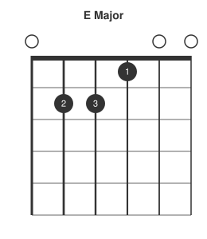
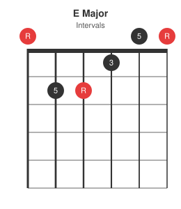
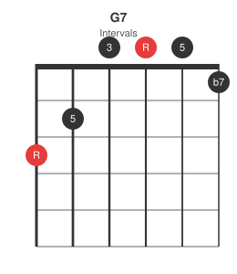
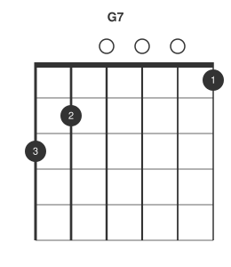
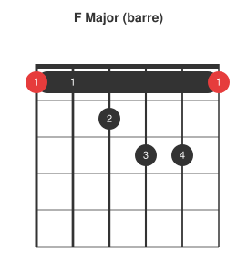
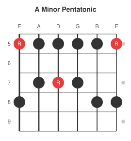
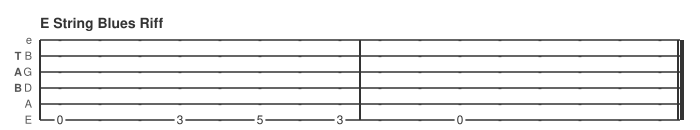
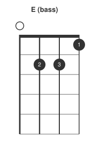

For a long time my guitar diagrams lived on paper -- annotated chord boxes and scale grids scribbled in notebooks. When it came to writing them up digitally I found the process time consuming and the results inconsistent: different posts would use different styles, sizes, or notation conventions with no easy way to keep them in sync. This post introduces pelican-fretboard, a plugin that renders chord charts, scale boxes, and tab directly from fenced code blocks in Markdown. Diagrams are generated as SVGs, cached on disk, and served as static files -- nothing to install on the reader's side.
The plugin uses fretdrom as its rendering engine. Fretdrom takes JSON5 input -- the same wavedrom-style philosophy of a single top-level key determining diagram type -- and emits clean SVG. Blocks use the fretdrom language identifier in Markdown fences.
The problem with ASCII diagrams
The classic way to notate a chord in plain text looks like this:
E Major
e ---0---
B ---0---
G ---1---
D ---2---
A ---2---
E ---0---
Fingers: - 2 3 1 - -
It works, but it is fragile to copy-paste, hard to scan at a glance, and carries no colour or visual hierarchy to distinguish the root note from the rest of the chord.
Chord diagrams
The plugin renders a fretdrom block with a chord key into a standard box diagram. The frets string runs low string to high (E A D G B e for standard tuning). x means muted, 0 is open, 1-9 are fret numbers.
Fingers view
Add a fingers string and each fretted dot shows the finger number. - means no label:
```fretdrom
{ chord: { name: "E Major", frets: "022100", fingers: "-231--" } }
```

Open strings show a small circle above the nut; the first fret is drawn as a thicker nut line.
Intervals view
Supply an intervals array instead and each dot shows its interval relative to the root. When intervals is present the subtitle automatically shows Intervals:
```fretdrom
{ chord: { name: "E Major", frets: "022100", intervals: ["R", "5", "R", "3", "5", "R"] } }
```

Comparing fingers and intervals views of the same chord makes it easy to see which finger lands on which interval -- useful when discussing voicings or substitutions.
A seventh chord
G7 is a good test because it includes four distinct intervals. The intervals view makes the b7 on the high e string immediately visible:
```fretdrom
{ chord: { name: "G7", frets: "320001", intervals: ["R", "5", "3", "R", "5", "b7"] } }
```

The same shape in fingers mode:
```fretdrom
{ chord: { name: "G7", frets: "320001", fingers: "32---1" } }
```

Barre chords
The barre key draws the barre bar. from_string and to_string are 1-indexed, low string to high:
```fretdrom
{ chord: {
name: "F Major (barre)",
frets: "112331",
fingers: "112341",
root_strings: [1, 6],
barre: { fret: 1, from_string: 1, to_string: 6 }
}}
```

Scale diagrams
The scale key renders a fretboard grid. grid is an array of rows, one per string (low E first), each row an array of cell values. "R" = root, "x" = scale note, "." = empty.
```fretdrom
{ scale: {
name: "A Minor Pentatonic",
start_fret: 5,
num_frets: 5,
grid: [
["R", ".", ".", "x", "."],
["x", ".", "x", ".", "."],
["x", ".", "R", ".", "."],
["x", ".", "x", ".", "."],
["x", ".", ".", "x", "."],
["R", ".", ".", "x", "."]
]
}}
```

Fret numbers are shown on the left so the position on the neck is always clear. Cell values other than R, x, and . are treated as interval labels and rendered inside the dot.
Tab
The tab key takes an array of string lanes, highest string first (standard tab order). Each lane has a name and a wave string where each character is one beat: . is an empty beat (dash), 0-9 are fret numbers. config.bar draws bar lines every N beats:
```fretdrom
{ name: "E String Blues Riff",
tab: [
{ name: "e", wave: "................" },
{ name: "B", wave: "................" },
{ name: "G", wave: "................" },
{ name: "D", wave: "................" },
{ name: "A", wave: "................" },
{ name: "E", wave: "0..3.5.3..0....." }
],
config: { bar: 8 }
}
```

Any fretted instrument
Set tuning to match your instrument and the string count adjusts automatically:
```fretdrom
{ chord: { name: "E (bass)", tuning: "EADG", frets: "0221", fingers: "-231", root_strings: [1] } }
```

The same syntax works for ukulele (GCEA), five-string bass (BEADG), mandola (GDAE), or any open tuning.
How it works
The plugin registers a Markdown preprocessor that intercepts fretdrom fenced blocks before they reach the syntax highlighter. Each block is parsed as JSON5 and passed to the fretdrom CLI, which returns an SVG on stdout. The SVG is saved to content/images/fretboard/ using an MD5 hash of the block content as the filename. The fenced block is replaced inline with a Markdown image reference. The SVG cache persists across make clean -- diagrams are only regenerated when their source content changes.
If the fretdrom binary is not found the block falls back to a json5 code block so the build never fails.
Source and installation instructions are at github.com/morganp/pelican-fretboard.